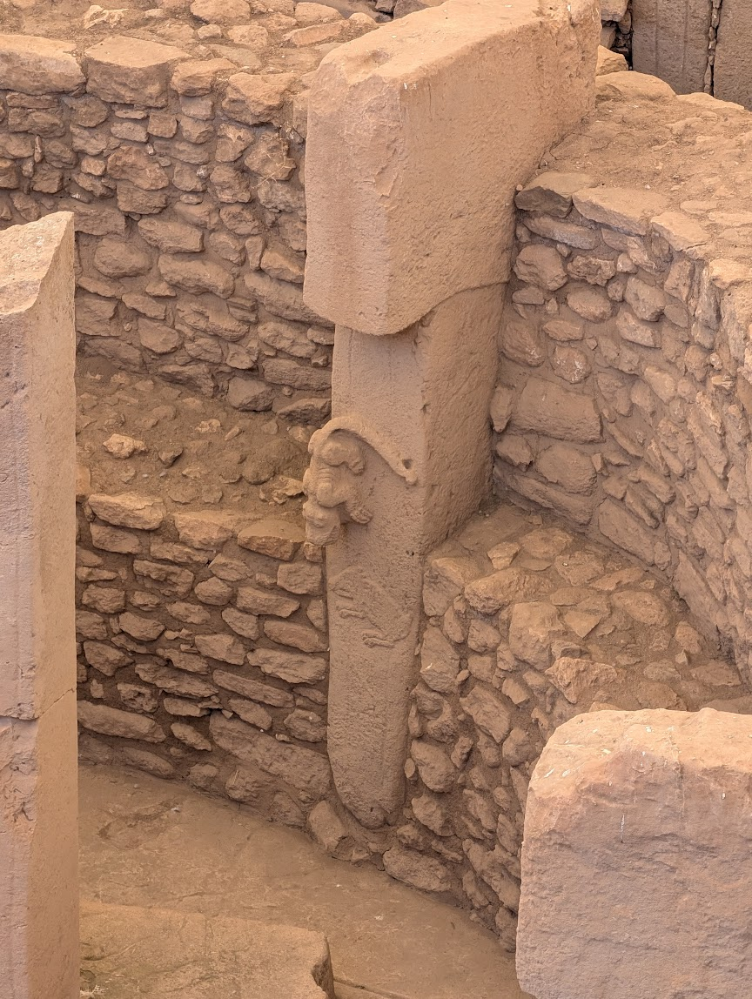

Home › Prehistoric › Mesolithic
Mesolithic art
As the last Ice Age ended around 10,000 BCE, forests spread and the great herds changed. People still hunted, fished and gathered, but in smaller, more mobile groups. Art shifted accordingly.
From single animals to scenes
Where Paleolithic painters favoured large, isolated animals, Mesolithic rock art often shows many small human figures acting together: hunting, dancing, gathering honey, fighting.
- Levantine rock art, eastern Spain. Slim red figures of archers and hunters painted in rock shelters, often dated to the Mesolithic or later.
- Tassili n'Ajjer, Algeria. Thousands of images in the Sahara, recording changing climate and life across many millennia.
- Bhimbetka, India. Rock shelters painted over a very long period, with hunting and dancing scenes.
Monuments before farming


Göbekli Tepe in southeastern Türkiye (~9500 BCE) overturned a long-held idea that monuments required farming. Its T-shaped limestone pillars, up to about 5 m tall, are carved with foxes, snakes, boars and birds. It was built by hunter-gatherers (it is often grouped with the earliest Neolithic).
Lepenski Vir on the Danube (Serbia) has sculpted boulders with fish-like faces, made by a fishing community.
Star Carr (England, ~9000 BCE) yielded red-deer antler frontlets, probably worn as headdresses in ritual or hunting.